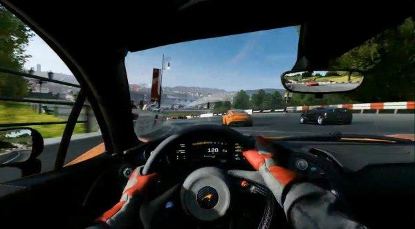
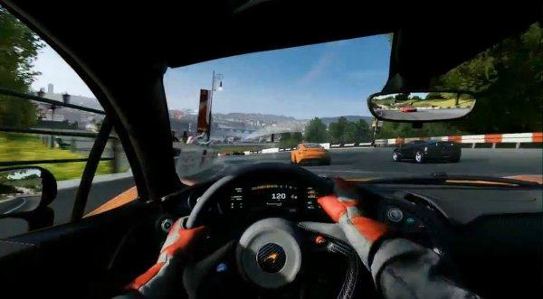

GameConsole
硬件规格
XBOX ONE
Xbox one是一款给予玩家全方位娱乐体验的超级机型。微软全方位超真实代入感的游戏控制模式还不成熟，不过，就算如此，一些已然非常逼真的游戏已经能在机器上面体验到了。以下是所有新入手Xbox One的玩家绝对不该错过6款超经典游戏。
作为Xbox One的代表作，《泰坦陨落》绝对是一款必玩的经典游戏。为何如此?很简单，作为天生机械控的铁血汉子们，难道不会对这种游戏过程中无处不在的超强机械质感，这毁灭一切事物的绝对力量动心么?而且不仅如此，游戏本身也采用了最先进的多人游戏系统，小伙伴们再也不用抢机器啦!游戏主题是机甲和科幻，主要剧情为人类的发展与宇宙其他势力的冲突，游戏使用起源引擎制作，包括繁体中文版本。
故事发生在未来，通过数代人类的探索，人类 已经掌握了时间与空间叠加的技术，触及并居住到了遥远的深空之中。这片包含着已知与未知恒星系的广袤区域被称为“边境”。大部分人永远不会前往这篇远离“正常文明”的区域，但对于开拓者、旅行家、探险家、雇佣兵和不法分子来说，“边境”除了风险还意味着“机会”。[1] 阵营，在游戏中被称为“派系”，分别是IMC和反抗军（The Militia）。 IMC，全称为星际制造有限公司（The Interstellar Manufacturing Corporation），作为小型自然资源开采工业企业起家时被称为“哈蒙德技术”（Hammond Engineering）。面对泰坦日益增长的需求、加之其星球市场调查技术和地图数据库的专利，“哈蒙德技术”积累的巨额的财富，并在仅一个世纪的企业兼并中成立了后来残酷的商业帝国——IMC。掌控着宝贵的航道以及高效的采集资源，IMC无时无刻都在追求利润的最大化，有的时候不惜不择手段。 而反抗军，是一个共同签订了“边境共同防御协定”的松散联盟，他们由在海外殖民地开拓的农场主、海盗、雇佣兵和不法分子组成。他们分成了不同的“旅团”负责不同行星的防御，虽然有些旅团规模还不及海盗部队，但是反抗军掌握的强大资源让他们成为了IMC在边境扩张的野心的最大阻碍。一般而言，反抗军代表的是那些在外探索的农场主的利益，但并非每个人都这么认为。
想用新买的Xbox One亮瞎小伙伴的眼，那么立刻《极限竞速5》吧!它无懈可击的汽车模型，你可以感受到身临其境的驾驶体验。而且游戏本身拥有次时代游戏的智能特质：Xbox One 的云系统可以收集玩家的游戏数据。此外，丰富的个性化选项可以给予任何一类人超凡愉悦的游戏体验。
在 Forza Motorsport 5《极限竞速5》当中还包括了来自超过五十家车厂、总计超过两百款的经典与现代名车，其中于台湾上市的年度游戏版（Raceing Game Of The Year）内，还附赠了由赛车专家「Top Gear」严选出的十七条次世代的赛道，以及十款可供额外下载的车辆严选出的十七条次世代的赛道，以及十款可供额外下载的车辆。[1] 最贵车辆600元[3] 在游戏中，玩家们可以花钱购买游戏中的一种货币“Token”（筹码或者令牌），消费这种筹码可以购买车辆或者能在一段时间内提高赢得比赛获得的经验值。筹码的销售方 式有很多种，基本上遵循多买多送的原则，有100个,575个,1250个,2700个,8000个,20000个6种打包方式，售价分别为0.79欧元，3.99欧元，7.99欧元，15.99欧元，39.99欧元和64.99欧元。 《极限竞速5》中的车辆定价不一，比如一辆迈凯轮P1或法拉利Enzo的价格为2334个筹码，售价大概为14欧元。由于有多买多送的原则，所以如果你购买的是20000个64.99欧元的那款的话，那这两辆车的售价就是大约7.6欧元。
 

FIFA迷们的福利来了!Xbox One大幅度的改进了最新版本的FIFA 14。足球选手的面容更加清晰，看台的观众更加逼真，全新的默认视角将让过人变得更加轻易，这一切难道不都是FIFA迷朝思暮想的么!与PS3和Xbox360版的FIFA相比，Xbox One的FIFA有一个质的飞跃了。看起来，FIFA的统治生涯将会继续延续下去。
FIFA14是一款足球运动游戏，这是该系列的第14部作品也是跟“实况足球”相竞争的动作游戏，该系列作品每一代都会见到明显的改进，这一代也不例外游戏的不仅在最直观的画面上进行了改进并且在其他方面都有了很大的进步。 游戏的画面加强了观众的角色的画质并且使用了最新的数据管理系统让游戏变得更加智能，这一代的作品离真实又进了一步，首先体现在玩家射球的角度上，玩家使用的力度距离角度会直接影响球的路线，再是球员的带球控制能力变得更强并且会做出非常巧妙的传球骗过玩家的眼睛同时还优化了远距离传球，另外游戏加强了电脑的判断力不会出现所谓的挡到人或者或者乱跑的现象，如果玩家是足球迷可千万别错过它。
乐高游戏超强的娱乐体验，其实早已名声在外。不过今天要说的，是经典中的经典《乐高漫威超级英雄》!来自Marvel漫画系列的100多个超级角色将会出现，不管是像金刚狼这样的超级英雄，还是神奇四侠这样的经典角色都会出现。这些超级英雄的加入，会让这款游戏成为整款游戏家族的骄傲。
《乐高漫威超级英雄》讲述尼克弗瑞 集结超级英雄，包括钢铁侠，绿巨人，蜘蛛侠，雷神，金刚狼还有其他来自漫威宇宙的角色，例如洛基，行星吞噬者，玩家可选择扮演自己喜欢的角色。 《乐高漫威英雄》最开始是银影侠外出巡逻，但出于某种神秘原因，他的飞行滑板变成了宇宙碎片，成了洛奇和其他反派寻找的目标。而玩家扮演的英雄们就需要在这些反派之前找到这些碎片，让这次简单的巡逻任务别再出现更大的乱子。《乐高漫威超级英雄》是一款既温馨又充满智慧、底蕴深厚、拥有上百名漫威角色和故事的游戏。主线剧情长约8小时，但游戏世界的内容非常丰满。也许《乐高漫威超级英雄》无法和2013年其它的几部开放世界游戏相比，但那些游戏恐怕也要费上好大的力气，才能赶上本作为玩家所带来的欢乐。
《丧尸围城3》将这个系列提升到一个全新的高度!对，你没看错，这是带插齿的压路机，或者我们可以叫他丧尸终结者!还有性感玩具火箭炮，嗨，丧尸先生，想HIGH一把么? 游戏中3倍于2代的僵尸数量，全开放的游戏世界，更多可以制造的灭尸神器足以让玩家惊喜连连了。
游戏设定丧尸围城2的10年后，在加利福尼亚的洛佩迪多市，于三月二十三日七点十四分，收到第一宗丧尸感染个案。后在数小时内迅速扩散整个洛佩迪多市。 疫情爆发72小时后，游戏的主角尼克·拉莫斯爬上了洛佩迪多市大桥的隧道出口前，想要离开这是非之地。《丧尸围城3》并不是靠画面取胜的游戏，被它吸引的玩家通常都会对战斗中真实的打击感、几乎无尽的僵尸与荒唐的武器系统表现出很大兴趣。喜欢该系列游戏的玩家通常愿意用不断更新的古怪的利器来屠杀僵尸，而《丧尸围城3》在这一点上做得很到位。《丧尸围城3》有着丰富的游戏内容和较好的游戏素质，抛开画面的差强人意，游戏还是会给玩家带来大部分乐趣。作为恐怖游戏，偶尔在黑暗之处玩家会被丧尸抓住来一个小惊吓。而大部分时候玩家则可以使用不同的武器和载具去碾压尸群，就像在玩一款无双类作品。
联系信息
最近
更多 -信息收集友情链接